Префектура Окинава · Наха, Сюри · история и архитектура
Замок Сюри: пять пожаров, шесть веков и новый главный зал королевства Рюкю
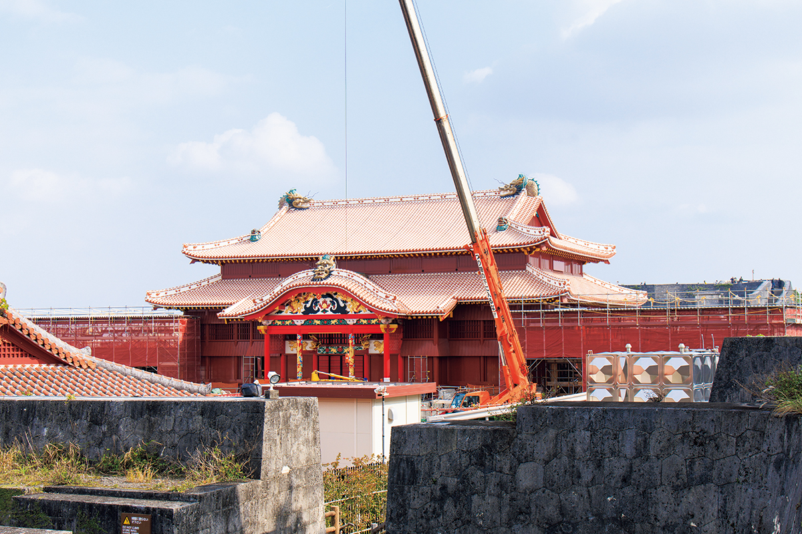
Замок Сюри на холме над Нахой почти пять веков был сердцем королевства Рюкю, и его главный зал сгорал пять раз. После пожара 2019 года его снова восстанавливают, и стройку здесь не прячут, а показывают гостям.
Пожар
Ночь 31 октября 2019 года
31 октября 2019 года новость о пожаре в замке Сюри облетела весь мир. Огонь вспыхнул внутри главного зала Сэйдэн и задел девять построек. Из 46 сооружений парка «Замок Сюри» семь сгорели полностью, среди них сам Сэйдэн, стоящие рядом Северный зал Хокудэн и Южный зал Нандэн с караульней, а ещё две пострадали частично.
«Замок Сюри любили жители префектуры как символ истории Окинавы, и потерять его было очень горько. Но многие, мне кажется, именно тогда заново поняли, как важно беречь историю и культуру Окинавы»
сотрудник отдела восстановления замка Сюри в управлении префектуры Окинава
Префектура открыла сбор пожертвований на восстановление, и к концу декабря 2025 года из Японии и из-за рубежа пришло около 6,1 млрд иен, намного больше, чем рассчитывали. Сразу после пожара Окинавское управление кабинета министров Японии и префектура взялись за план восстановления вместе. Работы шли около шести лет, и по планам на май 2026 года главный зал должны были завершить осенью 2026 года. Снаружи Сэйдэн уже готов: государство, префектура, учебные заведения и простые люди восстанавливают его общими силами.
История
Пять раз из пепла
Путь к главному залу начинается у ворот Сюреймон. За ними пологий подъём, который здесь называют «фира», выводит к Сэйдэну, обнесённому строительными щитами. Лучше всего зал и ход работ видно с площадки Кё-но-ути, священного места чуть в стороне от главного здания.
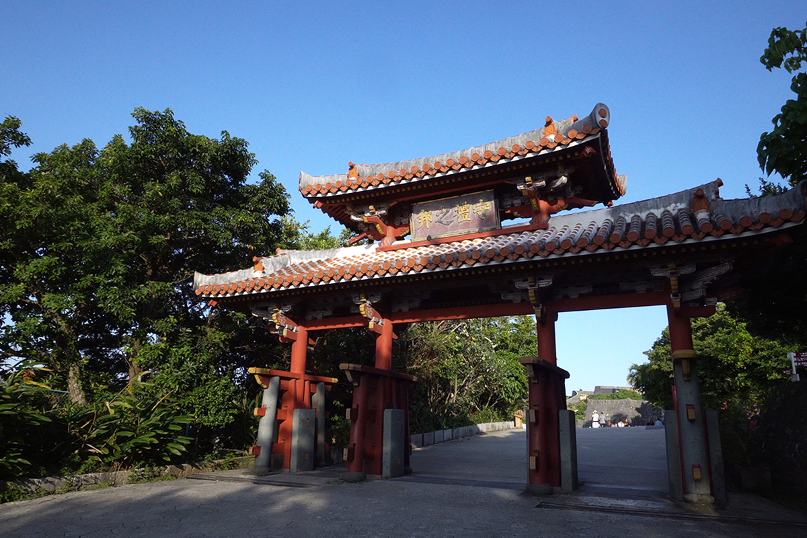
Нынешнее восстановление уже пятое. Сэйдэн сгорал один раз во времена, когда Рюкю был вассалом китайских императоров (они утверждали правителей королевства, а Рюкю отправлял им дань), дважды в эпоху, когда королевство подчинялось княжеству Сацума и сёгунату Эдо, затем в битве за Окинаву 1945 года и, наконец, в 2019 году.
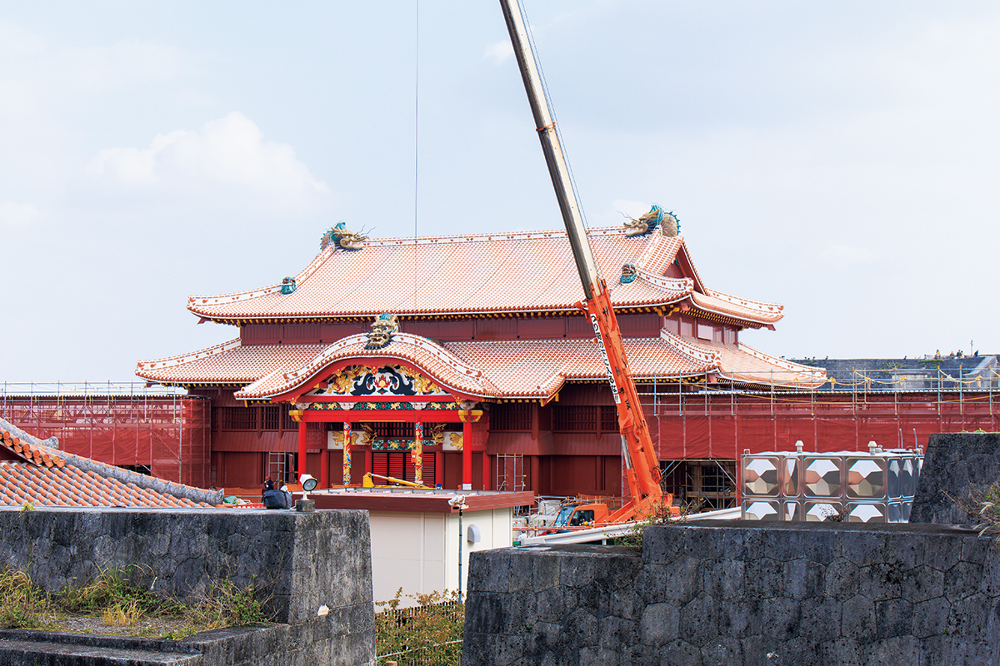
Королевство Рюкю перестало существовать в 1879 году, когда на его месте учредили префектуру Окинава. Замок был то казармой японской армии, то школой. Во время Второй мировой войны армия вырыла под ним сеть подземных укрытий на случай высадки американцев, и в 1945 году, когда началась битва за Окинаву, замок стал целью ударов: в Сюри сгорели почти все здания. На руинах построили кампус университета Рюкю, а когда университет переехал, началось восстановление замка. В 1992 году Сэйдэн отстроили заново, это восстановление называют «восстановлением Хэйсэй».
В 2000 году фундамент главного зала вошёл в список Всемирного наследия ЮНЕСКО в составе объекта «Замки гусуку и связанные с ними памятники королевства Рюкю». Замок Сюри был главным учреждением королевства и до сих пор хранит его историю: он прошёл с Окинавой через все её бурные времена.
Главные даты
- 1429: образовано королевство Рюкю
- 1453: замок полностью сгорел во время смуты Сиро и Фури
- 1609: вторжение княжества Сацума
- 1660: пожар, в 1672 году замок отстроили
- 1682: на крыше главного зала установили драконьи навершия конька
- 1709: пожар, восстановление начали в 1712 году и закончили в 1715-м
- 1768: большой ремонт главного зала
- 1853: коммодор Перри прибыл на Рюкю и посетил замок
- 1872: учреждено княжество Рюкю
- 1879: королевство упразднено, появилась префектура Окинава, в замке разместился гарнизон японской армии
- 1925: главный зал объявлен национальным сокровищем
- 1945: замок сгорел в битве за Окинаву
- 1950: на месте замка открыли кампус университета Рюкю
- 1972: Окинава вернулась в состав Японии
- 1989: начато «восстановление Хэйсэй»
- 1992: главный зал восстановлен
- 2000: руины замка и другие памятники внесены в список Всемирного наследия
- 2019: главный зал и другие здания сгорели
- 2022: начато «восстановление Рэйва»
- 2025: завершён внешний облик главного зала
- 2026: окончание работ было намечено на осень
Двор
Дворец, святилище и дом короля
Когда именно построили замок, неизвестно. Всерьёз его стали обустраивать, как считается, при короле Сё Хаси (1372–1439), основателе королевства Рюкю, которое просуществовало с 1429 по 1879 год. Около 450 лет замок был центром политики, веры и искусства, а заодно самым большим зданием королевства и домом его правителей.
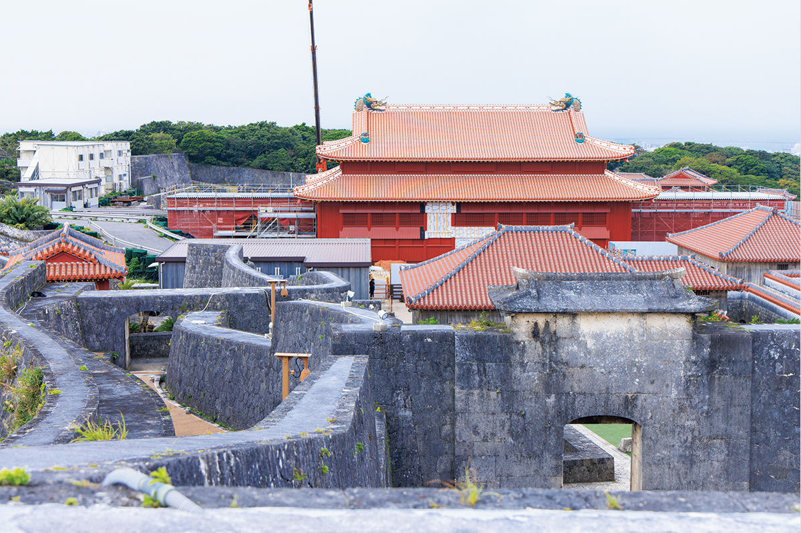
Замок делится на три части. К западу от главного зала стоят здания для церемоний: это пространство политики и управления. Во второй части собраны священные места, где совершали обряды. Третья часть отведена для жизни и придворного этикета: там находится Оутибара, где жили придворные дамы, служившие королевской семье. Сам Сэйдэн был главным зданием замка, здесь король лично проводил церемонии и решал государственные дела.
Королевству постоянно приходилось принимать гостей из разных миров: китайских послов сакухоси, посланников Сацумы, а в 1853 году и коммодора Перри. Гостеприимство стало частью внешней политики, и при дворе сложилась своя культура приёма. На семи королевских пирах подавали рюкюскую кухню, для гостей ставили музыкальную драму кумиодори и рюкюские танцы, а мастера создавали ткани и другие изделия.
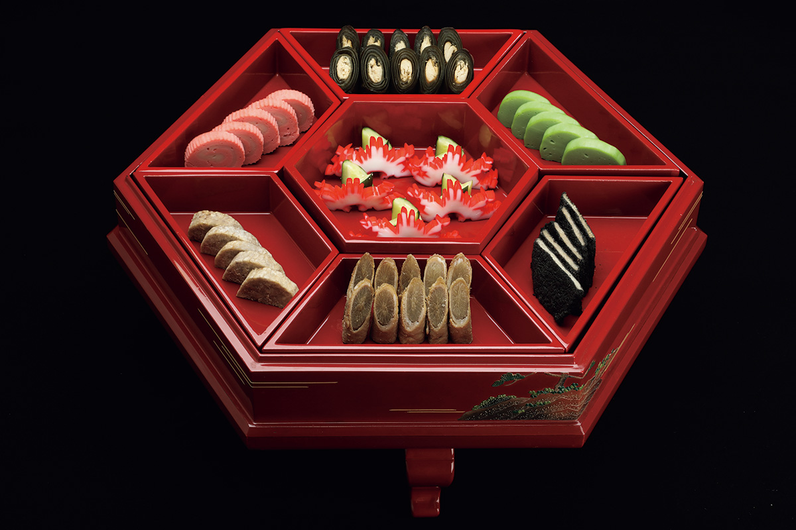
Архитектура
Китай, Япония и сам Рюкю
В облике Сэйдэна видно, что Рюкю стоял на перекрёстке торговых путей между странами Азии и богател как морская держава. Двухъярусное здание напоминает дворцы Китая, Кореи и других соседей, а изогнутый фронтон над входом, «карахафу», пришёл из японской храмовой архитектуры. К этому Рюкю добавил свои пышные формы, резьбу по дереву и камню с растениями и животными и любовь к ярким краскам. Когда видишь новый алый зал на фоне синего неба, понимаешь, почему именно здесь сложилась культура приёма гостей со всего света.
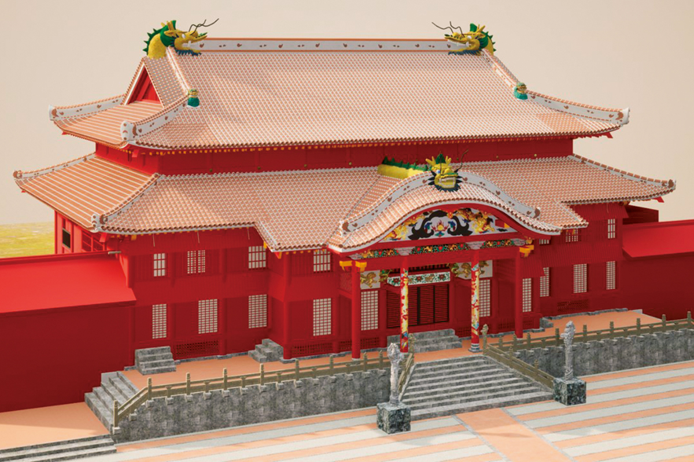
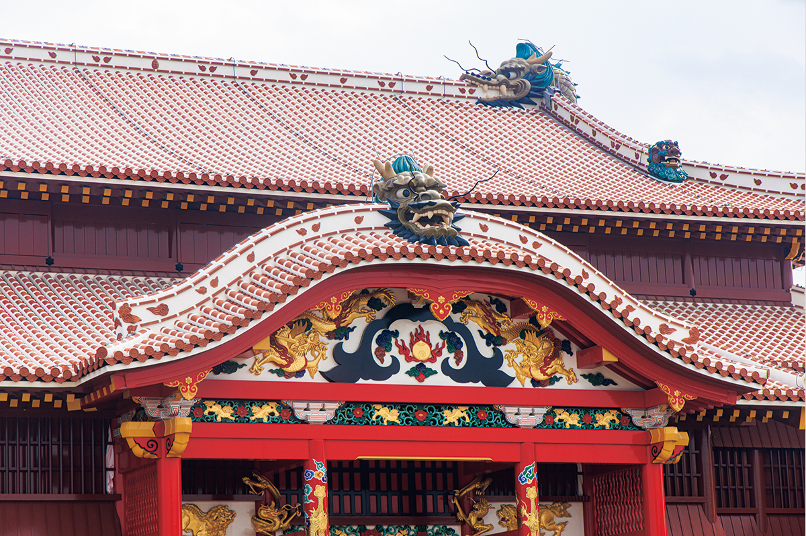
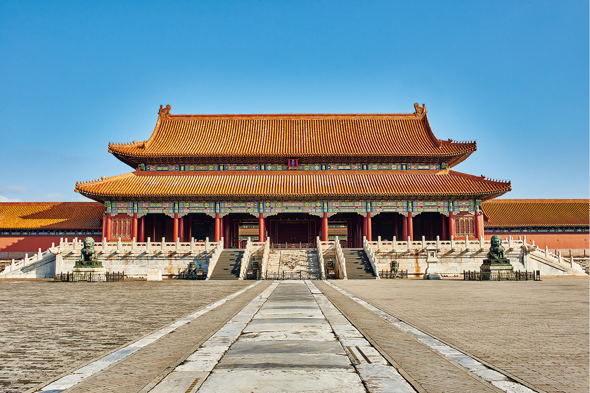
Восстановление
Каким будет новый Сэйдэн
Для «восстановления Рэйва» за образец взят главный зал XVIII века. Это последний облик зала при королевстве и время его наибольшего расцвета, а заодно самый ранний облик, от которого сохранились документы и фотографии. На этот же период опиралось и восстановление 1992 года.
Отличия от прежнего зала касаются дерева, черепицы, росписи и резьбы, то есть всего, что прояснили новейшие исследования, а также защиты от огня. Например, удалось установить состав пигмента лакового покрытия, который в 1990-е годы оставался загадкой. Теперь стены красят красной охрой бэнгара из старого округа Куси, и цвет у них получится чуть глубже, чем прежде. Противопожарную защиту усилили, чтобы предотвратить новый пожар, вовремя заметить возгорание и быстро с ним справиться. А для балок на этот раз взяли окинавское дерево: два ствола окинавского дуба урадзирогаси из села Кунигами на севере острова.
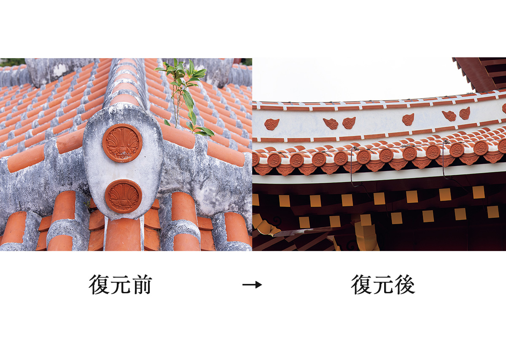
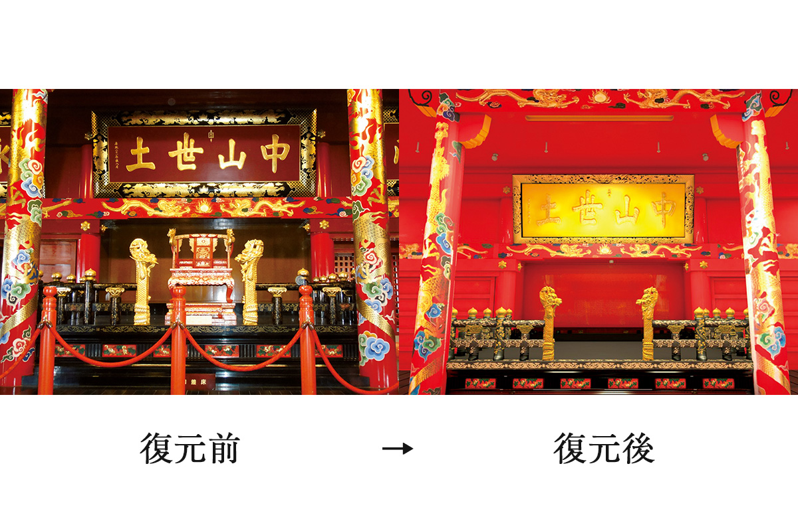
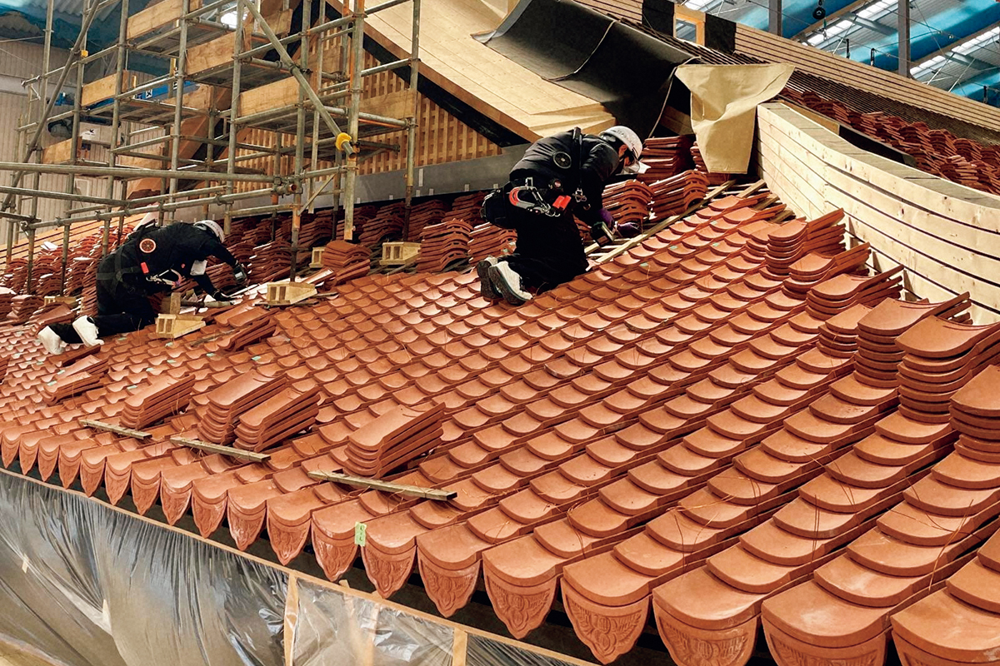
Стройка
Восстановление напоказ
Главная идея нынешних работ в том, чтобы показывать восстановление, а не прятать его. За стройкой у главного зала можно наблюдать, а в выставочном зале восстановления на стендах подробно рассказывают о ходе работ. Жителей тоже привлекают к делу: например, набирали добровольцев, чтобы растирать в порошок уцелевшую красную черепицу и снова пустить её в дело. Так само восстановление стало частью того, ради чего едут в Сюри.
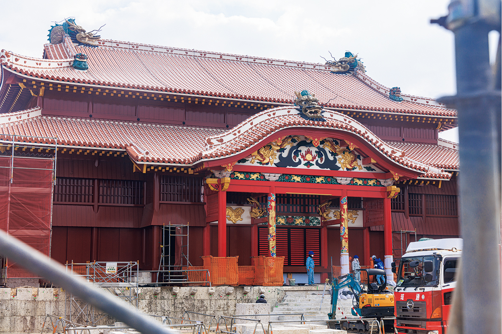
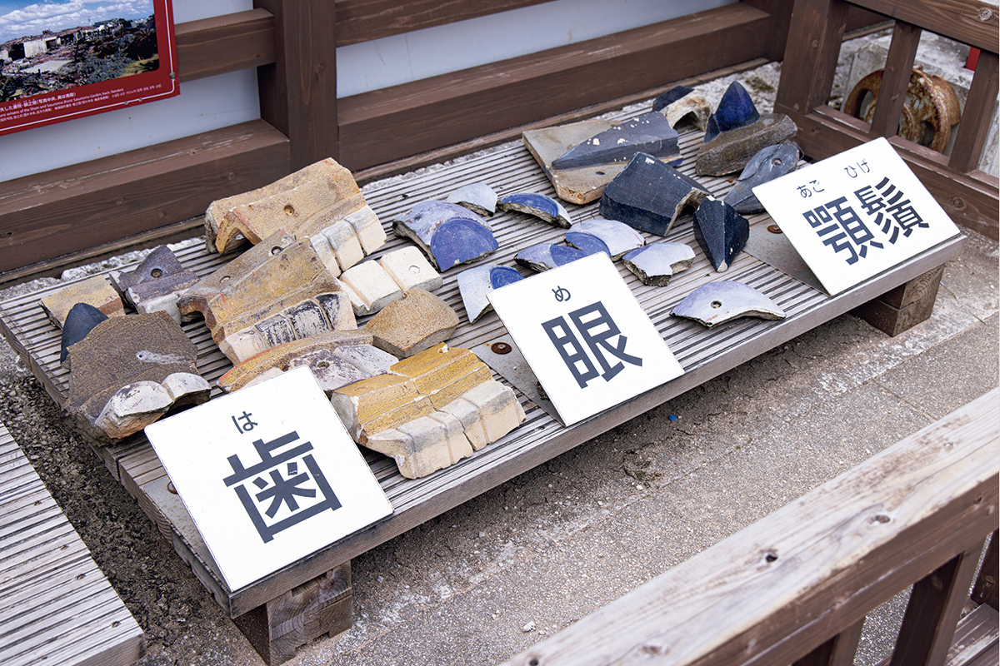
Парк «Замок Сюри»
- Адрес
- префектура Окинава, Наха, Сюри-Киндзё-тё, 1-2
Фото: Юкико Сираки.